Abstract
Similar to our prior work on IGHA*, we focus on efficient anytime kinodynamic planning for systems with complex dynamics in unstructured environments where precomputing motion primitives is infeasible. While IGHA* was motivated by the need to decouple how the tree is searched with what tree is being searched over, it remains susceptible to accidental freezing of vertices that are needed to reach the goal. For example, Fig.1 shows an example of IGHA* vs Bi-IGHA* on a Reeds–Shepp style goal in (x, y, θ). On a Reeds–Shepp style goal in (x, y, θ), IGHA* misses the true goal test in the full space by freezing a critical vertex, wasting expansions, and forcing resolution refinement. While classical bidirectional search is typically motivated by reduced effective search depth, our key insight is that Bi-IGHA* additionally benefits from a mitigation of the frozen vertex barrier through near-meets. Bi-IGHA* preserves the core guarantees of IGHA*, including monotonic improvement of solution cost and termination with the best path, while delivering significant speedup on benchmarks.
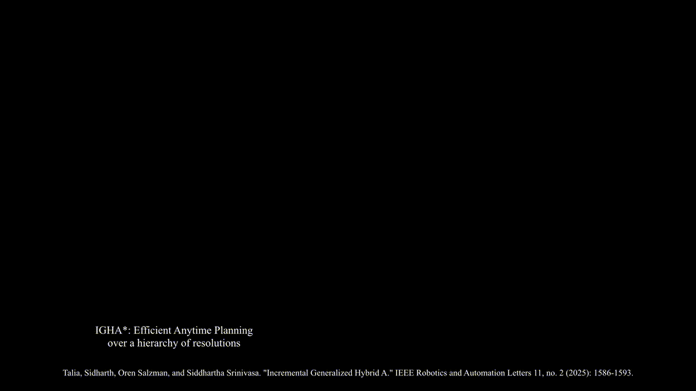
Method overview
Bi-IGHA* instantiates two IGHA* searches that share the current best path cost for branch-and-bound and periodically check for feasible near-meets between the forward and backward trees. When multiple opposing vertices qualify, the implementation selects the meet that minimizes the sum of costs plus the local connection cost. Forward and backward searches can change resolutions independently; if one side terminates, the other continues until its queue is exhausted.
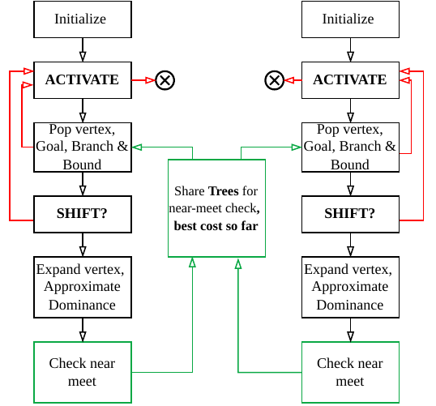
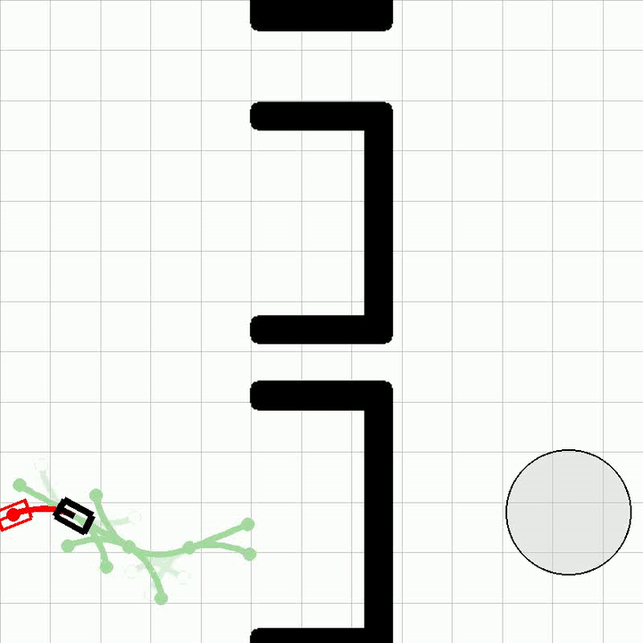
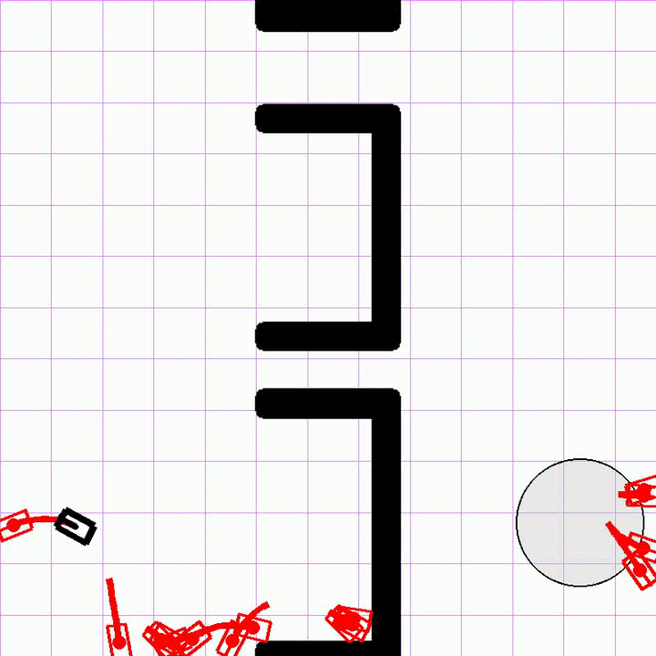
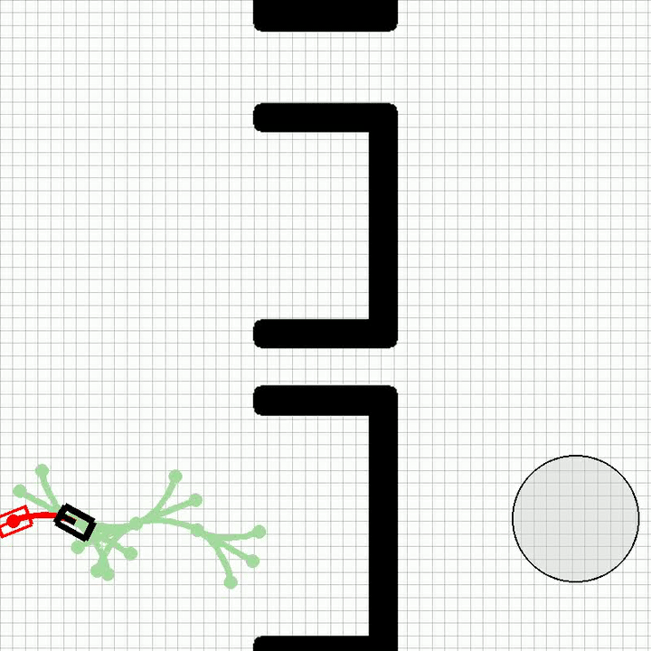
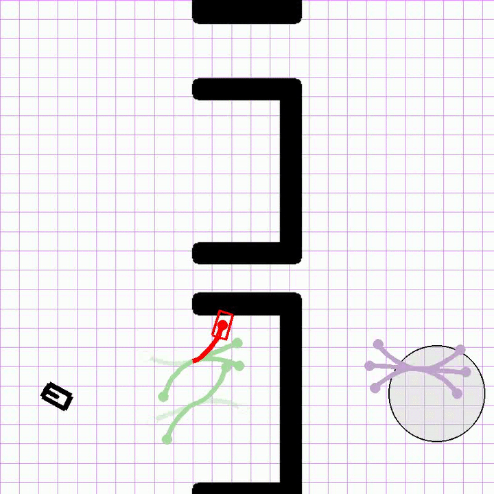
Results
How does Bi-IGHA* compare to IGHA* on open-loop benchmarks?
We evaluate kinematic (3D), kinodynamic car (4D), and hovercraft (6D) systems across Moving AI and BeamNG-style maps, comparing Bi-IGHA* to forward-only IGHA* and to the faster of forward/reverse IGHA* (“Min”), for both first-solution and best-solution expansion counts. Fig. 7 shows that any Bi-IGHA* variant consistently delivers ~10x speedups over any IGHA* variant. In classical bidirectional search, the gains are typically due to reduced effective search depth as we're burning the candle from both ends. However, we found that the effect of mitigating the frozen vertices is powerful enough such that if compare the expected reduction in branching factor that classical bidirectional search would achieve for IGHA*, against the actual reduction in branching factor that Bi-IGHA* achieves, we see that Bi-IGHA* has a lower effective branching factor (B* > 1 implies greater than expected reduction in branching factor). This is illustrated in Fig. 8.
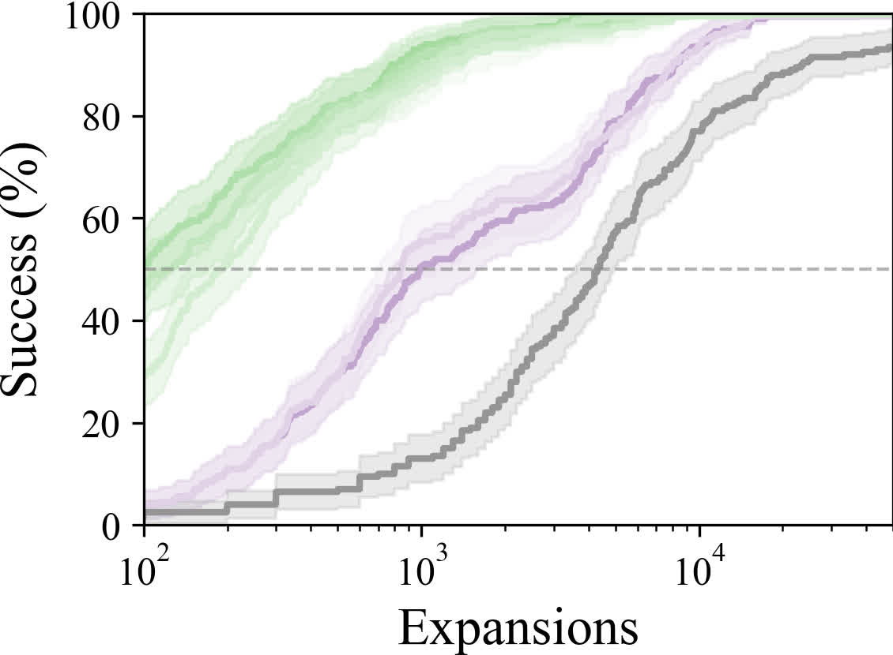
ℝ³ success
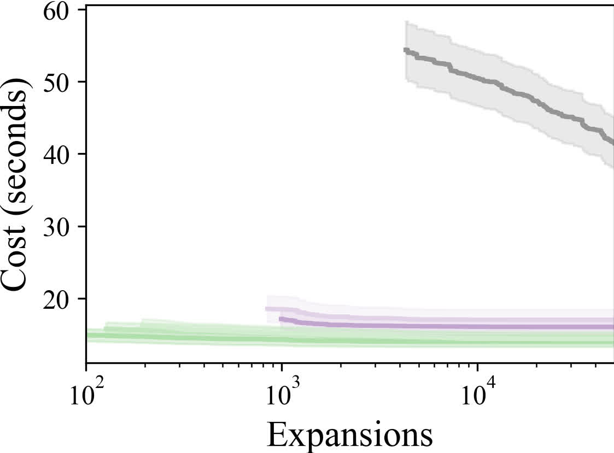
ℝ³ cost
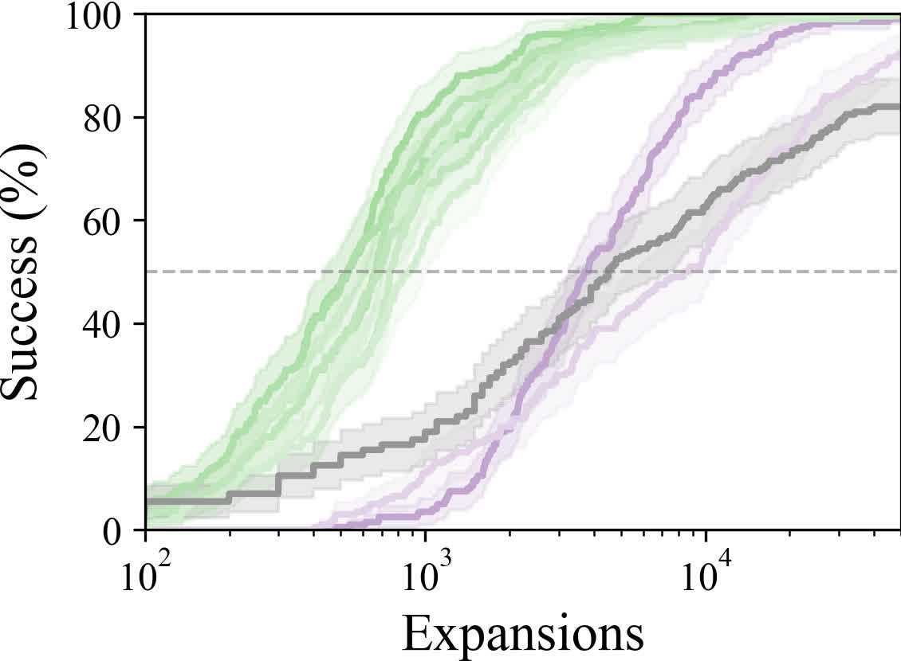
ℝ⁴ success
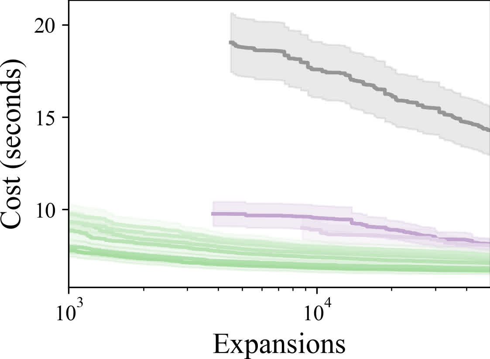
ℝ⁴ cost
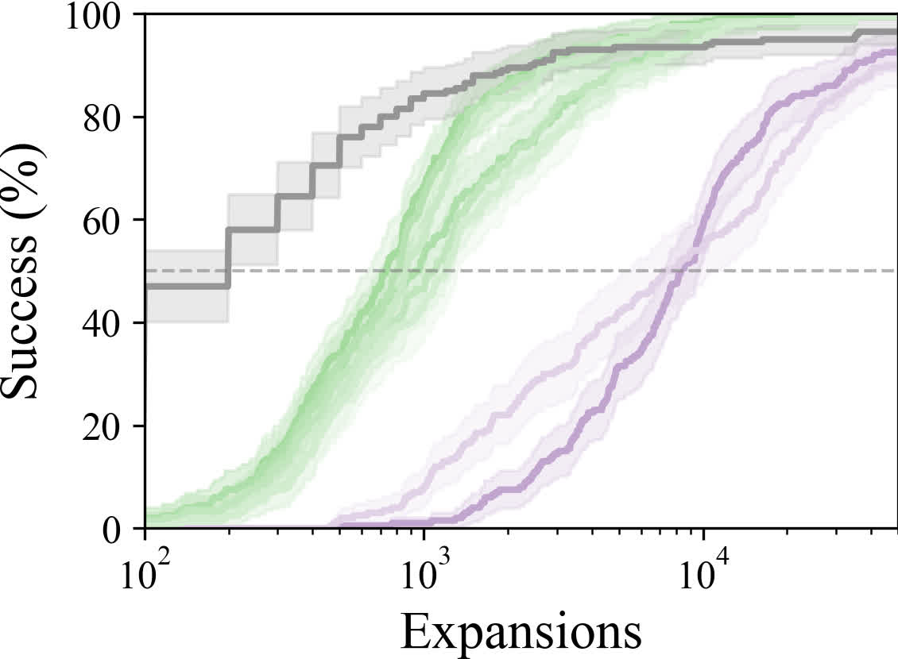
ℝ⁶ success
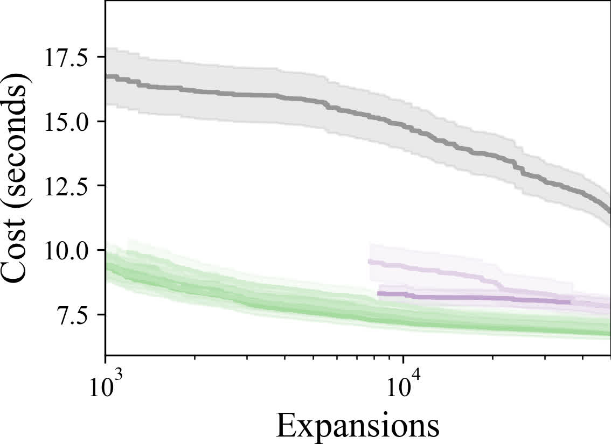
ℝ⁶ cost
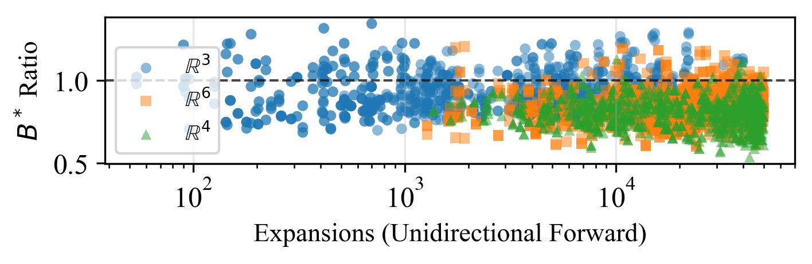
How does this speed up translate to closed-loop performance?
Using the same MPPI-based closed-loop stack and BeamNG-style benchmarking as the IGHA* paper, Bi-IGHA* achieves similar mission success and cost while tolerating much (4x) smaller expansion budgets—important when planning shares compute with perception and control.
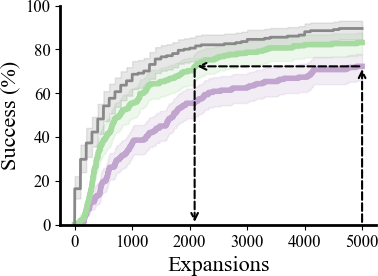
Playback success
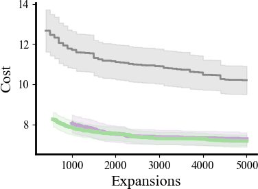
Playback cost
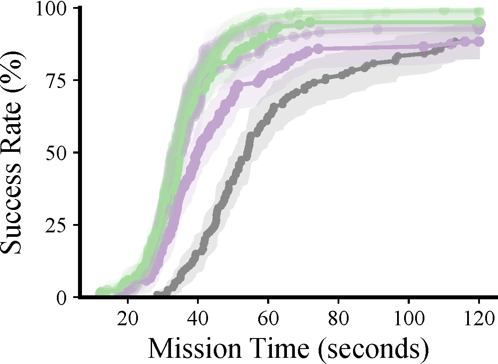
In-the-loop

Simulation (qualitative) — full width below the metric panels.
Anecdotes. Full-frame comparison clips (unclipped).